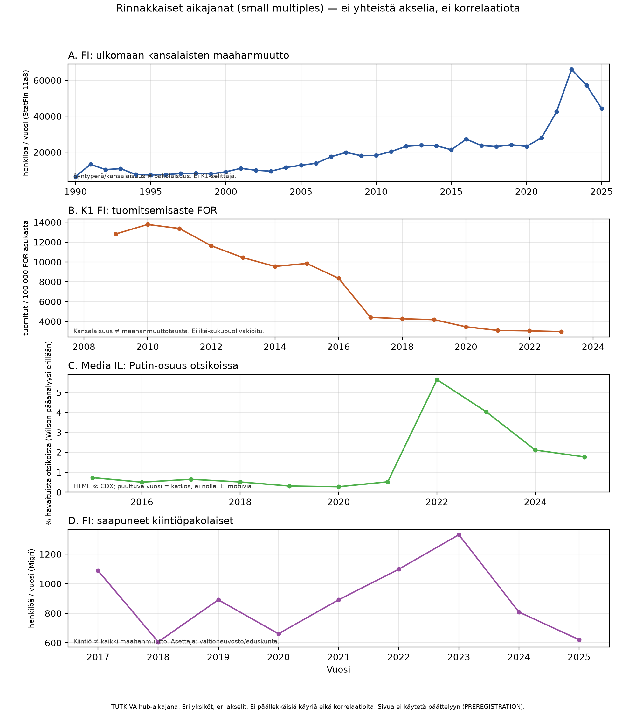

Paneelit
| paneeli | haara | otsikko | yksikko | n_pistetta | vuosi_min | vuosi_max | varoitus |
|---|---|---|---|---|---|---|---|
| A | FI-paneeli | FI: ulkomaan kansalaisten maahanmuutto | henkilöä / vuosi (StatFin 11a8) | 36 | 1990 | 2025 | Syntyperä/kansalaisuus ≠ pakolaisuus. Ei K1-selittäjä. |
| B | K1 | K1 FI: tuomitsemisaste FOR | tuomitut / 100 000 FOR-asukasta | 15 | 2008 | 2024 | Kansalaisuus ≠ maahanmuuttotausta. Ei ikä-sukupuolivakioitu. |
| C | Media | Media IL: Putin-osuus otsikoissa | % havaituista otsikoista (Wilson-pääanalyysi erillään) | 11 | 2015 | 2025 | HTML ≪ CDX; puuttuva vuosi = katkos, ei nolla. Ei motiivia. |
| D | FI-paneeli | FI: saapuneet kiintiöpakolaiset | henkilöä / vuosi (Migri) | 9 | 2017 | 2025 | Kiintiö ≠ kaikki maahanmuutto. Asettaja: valtioneuvosto/eduskunta. |